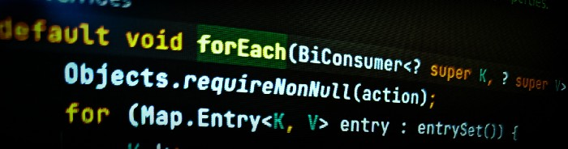

After failing countless interviews early in my career, I've made
it to the other side of the table — interviewing hundreds of front
end web developer candidates at a top silicon valley tech company.
Too often, talented candidates in a high pressure situation can
make simple mistakes that cost them the job. Knowing how painful
this process can be, I have created the ultimate resource for
front end developers.
Interview Preparation Guidelines
A sure way to make an impression on a recruiter or hiring manager
is to blow off preparing for your interview. However, the way to
make an outstanding impression as a qualified candidate is through
preparation, research and practice. Begin preparing for your
interview the moment you get a call from the recruiter to schedule
your meeting. Follow guidelines on research, logistics, questions
and answers to help present yourself as a superbly qualified
candidate.
Who is this for?
You're a little rusty with raw javascript and building things
from scratch
It's been a while since you've interviewed
You've got a few projects under your belt and ready to make the
next move
You're used to using frameworks and solving problems the
[React|Angular|Vue] way
Java Functional Programming

BiConsumer in Java's Map Interface
In the above example, the forEach method has an internal iterator,
iterating the collection of objects— The List. And each element in
the list is an object that represents an integer. So we are
iterating a collection that represents single-valued objects. But
what if we want to iterate a collection that contains the objects
representing multiple values. For example, take a Map.
A Map is a collection that contains objects where each object
represents two values — A Key and a Value. Now how to iterate
this. That's where BiConsumer comes into the picture. A BiConsumer
is a consumer that accepts two values. If you see the forEach
method of a Map class it accepts a BiConsumer. Here is the forEach
method from Map interface. The forEach method implementation that
we have seen in the previous article is from the Iterable
interface. The below is from the Map interface...